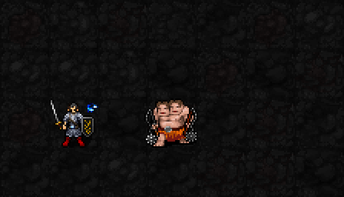
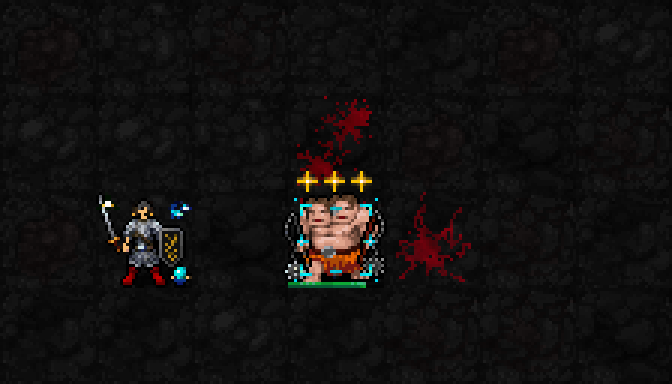

중첩 표시 초안: 직접 공격 적중 → 머리 위 별 1개 → 2개 → 3개.
1·2개는 밝은 청록색, 3개는 금색으로 완성 표시. 기존 몹 몸통의 청록·금색 표적 모서리는 유지합니다.

기존 승인 도트의 작은 별을 재사용했습니다. 별은 고정된 세 자리에서 한 개씩 늘어나며 몹의 머리 위에 표시합니다. 영상은 읽기 쉽도록 느리게 반복합니다.

별 축적은 자동 패시브이며 공격 자체의 MP·행동 시간은 원래 규칙을 따릅니다. 별 축적에 추가 MP·신앙 소모는 없습니다. 표적 수동 변경만 별도 1턴입니다. 기도술 최소 제한은 없습니다.
이번 3중첩 수치안: 처치 시 3턴간 다음 무기 공격·직접 공격 주문에 1d(3+4×별) 추가 물리 피해, AC 적용. 별 1/2/3개면 평균 4/6/8. 별 자체로 현재 적에게 평타 추가 피해를 주지는 않습니다.
실제 SDL 렌더러의 시각 검토용 빌드입니다. 기존 직접 주문 적중 처리로 실제 중첩을 1·2·3개 쌓고 그 수를 읽어 표시했습니다. 일반 플레이는 아직 기존 최대 5개·기존 피해식이며, 최대 3개/새 피해식/별의 계승은 미적용입니다. 테스트의 적은 높은 HP로 설정했고 주문 MP·턴 소모를 포함한 정상 던전 플레이 영상은 아닙니다. 이동은 검토용으로 배치했고 만료 상태는 테스트에서 지정했습니다. 촬영 때문에 별·HP·RNG가 추가로 바뀌지 않는지 확인했습니다.
표적 처치 보상을 다음 적에게 적중시키고 그 적이 살아남으면, 새 표적의 별은 1개 대신 2개로 시작합니다. 사용자 의견에 따라 이 후보를 유지합니다. 최대 3개, 한 표적 원칙은 그대로이며 실제 전투 연결은 아직 없습니다.